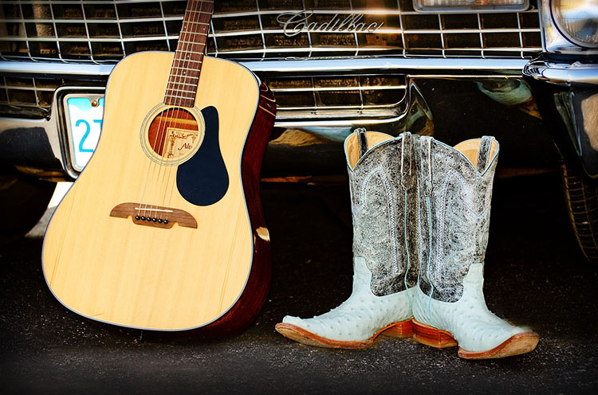

I was born in Thousand Oaks, Califronia but grew up in Parker, Colorado. I have 4 people in my family, including me and I was on the poms team in high school. I love country music with all my heart and enjoy workingout at the gym. I'm currently wanting to major in accounting and will be aplying this spring!
You can contact me by email: Preslieghmae123@gamil.com
or by phone: 303-408-7615
Follow me on Instagram: Presleigh.Thomas
- Education
- Sunshine Preschool
- Pine Grove Elementry (K-6)
- Sierra Middle School (7-8)
- Chaparral High School (9-12)
- Brigham Young University (Current)
- Work Expereince
- Nanny
- Hostest at Olive Garden
- Barista at Dutch Bros
- Skills
- Patient
- Social
- Dedicated
- Persistant
- Good at math and numbers
Interests
I love to workout, listen to country music, and do puzzles! I just recently got into wight lifting but love running as well. Morgan Wallen, Keith Whitley, Cody Johnson, and Luke Combs are my favorites. The biggest puzzle I have completed was 3,000 pieces!
